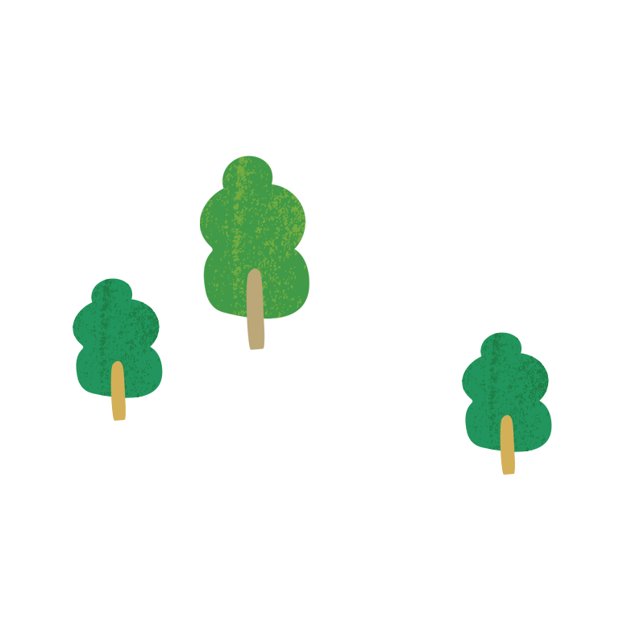

我的清單
登入
登出


最新消息
台灣區域有不同的自然景觀與人文特色，東面是群山綿延，發展農業產業特色。 西有鹽田魚塭，蘊運出結漁村文化。 平坦遼闊的地形讓生活在此土地上的人民有樂觀開朗的性格。
農村推薦
鄰近市區，水質環境優美，台灣部分地區保有純樸農村生活，水稻、綠竹筍等作物。 是許多市民健行與休閒的好去處。大、小朋友們赤著腳，手牽手走入農村裡，在清澈的田水、溝渠內摸田螺，感受傳統農村趣。


參與自然的豐收

多元文化的參與


了解天然生態
美食之旅
農村純樸自然、視野極佳，用著特別愉快的心情，享受著在地風味及健康料理。 清新自然無負擔的料理，搭配農莊精心策劃的套裝行程，在田園中暢意恣然。

在地特色，貼近在地文化，透過食材了解文化脈絡

午茶時光甜蜜蜜，讓你暫時忘記城市的庸碌

參與在地食材製作，親子DIY度過歡樂下午

季節新鮮限定，產地直接摘採製作，了解食材生產過程

農村小禮
遊歷特色旅遊行程後，提供網友購買各式紀念商品，為旅程留下完美印記。 並將喜悅帶與身邊所有朋友一同分享。 特色包裝充分表現當地文化與文創產業的完美結合。

回味小時候的味道

參與大自然的豐收

為生活增添風味

關於我們
台灣的農村文化多元，農委會希望農村風貌能持續保有田園之美而不受污染產業的破壞，保存的人文之美及永續維護， 例如多元民族的鄉土文化與傳統等；農村社區的希望和願景，在農村裡的每一個居民的努力下，一步一步朝想美好前完整的方向邁進。
關於農村小旅行
台灣地區多山的環境特質，孕育著豐富與多元化的自然資源，行政院農業委員會水土保持局自76年起以鄉（鎮、市、區）為對象，依各地區特性規劃產業發展、維護公共設施、改善生活環境、保護文物設施及環境等，
各社區秉持坡地農村既有資源，發展出不同特色。在資訊多元發展潮流中，資訊傳播已融入現代生活，有鑑於此，水土保持局以網路社群為媒介，
建置本網站，將各區之水土保持治理成果、景觀、生態、體驗、故事等特色，透過網站推廣至全國民眾。